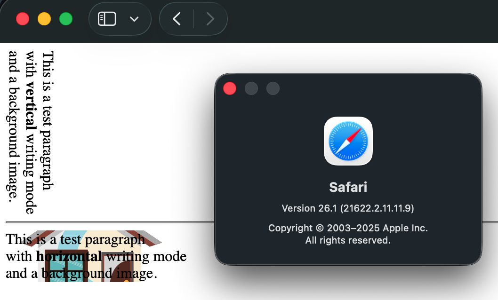
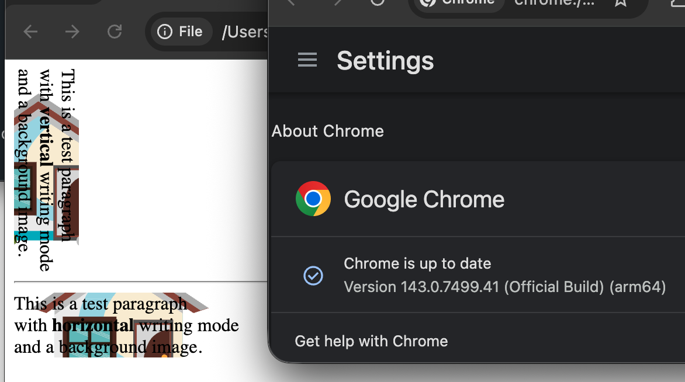

This is a test paragraph
with vertical writing mode
and a background image.
This is a test paragraph
with horizontal writing mode
and a background image.
Image with a vertical writing mode has no background, because div has zero width - unexpected.

Image with a vertical writing mode has background and non-zero width - as expected.
